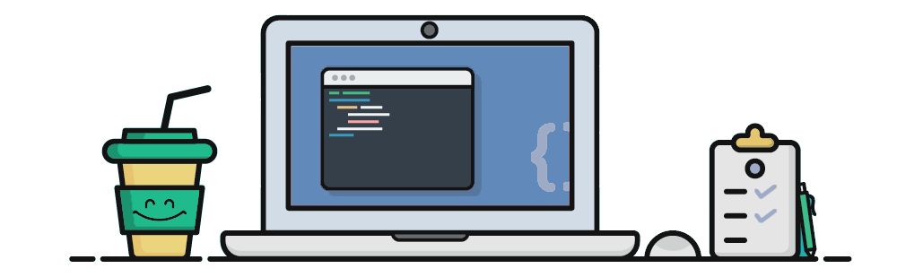

Producer, Technical Director

WoodArduinoPythonOBS NDI
A week-long holiday themed escape room installation combining of digital, electromechanical, and traditional puzzles.
More Info >>
I'm a Full Stack Engineer & UX Designer with a passion for making things and helping others.
A week-long holiday themed escape room installation combining of digital, electromechanical, and traditional puzzles.
More Info >>
Award-winning comedy PC simulator game about a 1950's suburban housewife whose home is invaded by Cthulhu.
More Info >>
Accessible tool for the global jazz community to contribute historical artifacts and digital exhibits to the Jazz History Database.
More Info >>